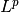
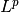

uniform_discr¶
-
odl.discr.discr_space.uniform_discr(min_pt, max_pt, shape, dtype=None, impl='numpy', \*\*kwargs)[source]¶ Return a uniformly discretized L^p function space.
- Parameters
- min_pt, max_ptfloat or sequence of floats
Minimum/maximum corners of the desired function domain.
- shapeint or sequence of ints
Number of samples per axis.
- dtypeoptional
Data type for the discretized space, must be understood by the
numpy.dtypeconstructor. The default forNonedepends on theimplbackend, usually it is'float64'or'float32'.- implstring, optional
Implementation of the data storage arrays.
- Returns
- discr
DiscretizedSpace The uniformly discretized function space
- discr
- Other Parameters
- exponentpositive float, optional
The parameter
 in . If the exponent is not
equal to the default 2.0, the space has no inner product.
in . If the exponent is not
equal to the default 2.0, the space has no inner product.- nodes_on_bdrybool or sequence, optional
If a sequence is provided, it determines per axis whether to place the last grid point on the boundary (
True) or shift it by half a cell size into the interior (False). In each axis, an entry may consist in a single bool or a 2-tuple of bool. In the latter case, the first tuple entry decides for the left, the second for the right boundary. The length of the sequence must belen(shape). A single boolean is interpreted as a global choice for all boundaries. Default:False.- weightingoptional
Use weighted inner product, norm, and dist. The following types are supported as
weighting:None: Use the cell volume as weighting constant (default).float: Weighting by a constant.array-like: Point-wise weighting by an array.
Weighting: Use weighting class as-is. Compatibility with this space’s elements is not checked during init.
See also
uniform_discr_frompartitionuniform Lp discretization using a given uniform partition of a function domain
uniform_discr_fromspaceuniform discretization from an existing function space
uniform_discr_fromintvuniform discretization from an existing interval product
Examples
Create real space:
>>> space = uniform_discr([0, 0], [1, 1], (10, 10)) >>> space uniform_discr([ 0., 0.], [ 1., 1.], (10, 10)) >>> space.cell_sides array([ 0.1, 0.1]) >>> space.dtype dtype('float64') >>> space.is_real True
Create complex space by giving a dtype:
>>> space = uniform_discr([0, 0], [1, 1], (10, 10), dtype=complex) >>> space uniform_discr([ 0., 0.], [ 1., 1.], (10, 10), dtype=complex) >>> space.is_complex True >>> space.real_space # Get real counterpart uniform_discr([ 0., 0.], [ 1., 1.], (10, 10))